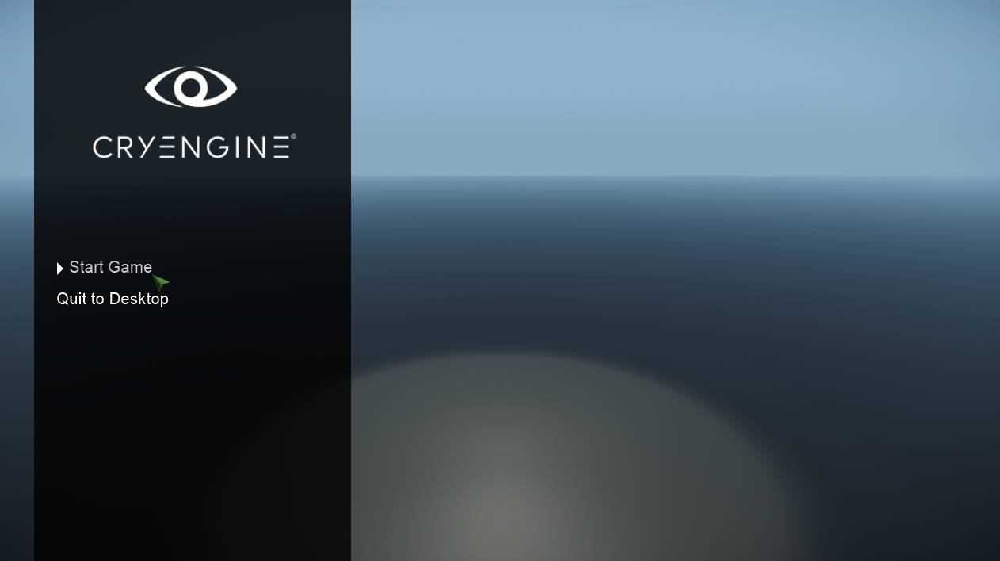
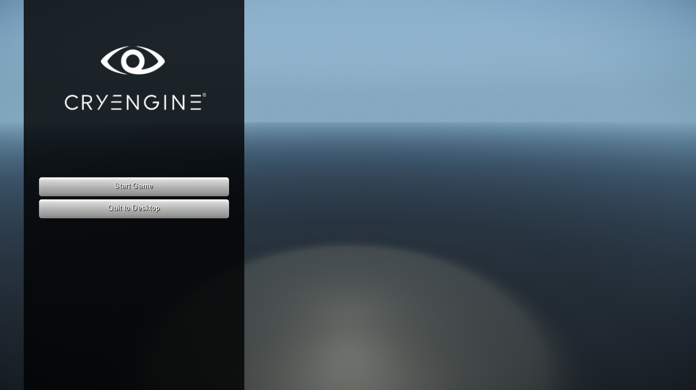

This tutorial will cover how to create a menu system. The goal of this tutorial is to have a home screen with a Start Game option that will load up a level and a Quit to Desktop option that will be used to quit the game.

Initial Setup
The starting point for this tutorial is the MainMenu class. This will be the root object for the menu. All other menus will be a child of the Main Menu.
using CryEngine;
using CryEngine.UI;
class MainMenu
{
private Canvas _canvas;
private MainMenuController _controller;
private Menu _currentMenu;
public bool Visible { get { return _canvas.Active; } set { _canvas.Active = value; } }
public MainMenu(Canvas canvas)
{
_canvas = canvas;
// Create the Controller that controls this menu.
_controller = new MainMenuController(this);
// Instantiate the menu.
_currentMenu = new HomeMenu(canvas, _controller);
Mouse.ShowCursor();
}
}The MainMenu will have a MainMenuController. This class will handle all the logic related to starting a game, switching menus, etc.
using CryEngine;
class MainMenuController
{
private MainMenu _mainMenu;
public MainMenuController(MainMenu mainMenu)
{
_mainMenu = mainMenu;
}
public void StartGame()
{
}
public void QuitToDesktop()
{
}
}Next is the Menu class and the HomeMenu class. The HomeMenu will eventually create a UI and handle the user's interaction with it.
using CryEngine;
using CryEngine.UI;
abstract class Menu
{
protected UIElement Root { get; private set; }
protected UIElement View { get; private set; }
protected MainMenuController Controller { get; private set; }
protected Menu(UIElement root, MainMenuController controller)
{
Root = root;
Controller = controller;
}
}
class HomeMenu : Menu
{
public HomeMenu(UIElement root, MainMenuController controller) : base(root, controller)
{
}
}And finally inside the Game class an instance of the MainMenu and a Canvas will be created.
public class Game : IDisposable
{
private static Game _instance;
private Canvas _canvas;
private MainMenu _mainMenu;
private Game()
{
// The server doesn't support rendering UI and receiving input, so initializing those system is not required.
if(Engine.IsDedicatedServer)
{
return;
}
_canvas = SceneObject.Instantiate<Canvas>(null);
_mainMenu = new MainMenu(_canvas);
}
public static void Initialize()
{
if(_instance == null)
{
_instance = new Game();
}
}
public static void Shutdown()
{
_instance?.Dispose();
_instance = null;
}
public void Dispose()
{
if(Engine.IsDedicatedServer)
{
return;
}
_canvas.Destroy();
}
}Creating the Home UI
The first menu will be a Home menu that will feature a Start Game button and a Quit to Desktop button.
For this part the CRYENGINE logo is required to be in the assets directory in /assets/libs/ui. The logo can be downloaded
The home menu will be managed by the UIHomeMenu class which inherits from the UIElement class. The class is responsible for creating a basic container where the buttons will sit.
using System;
using CryEngine;
using CryEngine.Rendering;
using CryEngine.Resources;
using CryEngine.UI;
class UIHomeMenu : UIElement
{
public override void OnAwake()
{
// Create a vertical panel strip.
var panel = Instantiate<Panel>(this);
panel.Background.Color = Color.Black.WithAlpha(0.5f);
panel.RectTransform.Size = new Point(400f, Renderer.ScreenHeight);
panel.RectTransform.Alignment = Alignment.Left;
panel.RectTransform.Pivot = new Point(1f, 0.5f);
panel.RectTransform.Padding = new Padding(50f, 0f);
// Display the logo.
var logo = Instantiate<Panel>(panel);
// Load the logo from the 'libs/ui' folder.
var path = System.IO.Path.Combine(DataDirectory, "logo.png");
logo.Background.Source = ResourceManager.ImageFromFile(path, true);
logo.RectTransform.Alignment = Alignment.Top;
logo.RectTransform.Size = new Point(300f, 300f);
logo.RectTransform.Padding = new Padding(0f, 150f); // Padding from top of the panel
}
}Make sure to include the CryEngine.Resources and CryEngine.Rendering namespace.
Back in the HomeMenu class the menu needs to be instantiated and attached to the root UIElement. This is done with a new method in the Menu class that will create and attach the UI properly to the root.
protected T CreateView<T>() where T : UIElement
{
var view = SceneObject.Instantiate<T>(Root);
view.RectTransform.Alignment = Alignment.Center;
view.RectTransform.Size = new Point(Root.RectTransform.Width, Root.RectTransform.Height);
// Store a reference to the View. This is needed later on.
View = view;
return view;
}The method will be called from inside the HomeMenu class to create an instance of UIHomeMenu.
private UIHomeMenu _view;
public HomeMenu(UIElement root, MainMenuController controller): base(root, controller)
{
_view = CreateView<UIHomeMenu>();
}After compiling and running the game will look like this:
Adding Buttons
Now that the basic UI is in place, the Start Game and Quit to Desktop buttons can be added.
Creating the View
The buttons will be displayed in a column. The UIButtonList is going to act as the container for the buttons in the menu. To make it easier to position the buttons the UIButtonList will inherit from VerticalLayoutGroup which is specifically made to display elements in a column.
The AddButton method will create an instance of a Button and will add it to the vertical layout group. This way buttons can be easily added to the menu.
using CryEngine;
using CryEngine.UI;
class UIButtonList : VerticalLayoutGroup
{
public Button AddButton(string label)
{
// Make the button.
var button = SceneObject.Instantiate<Button>(this);
button.RectTransform.Size = new Point(RectTransform.Width, 40f);
button.RectTransform.Alignment = Alignment.Top;
button.RectTransform.Pivot = new Point(0.5f, 1f);
button.Ctrl.Text.Content = label;
// Add the button to the vertical layout group.
Add(button);
return button;
}
}Now that buttons can be added the UIButtonList is ready to be added to the UIHomeMenu. This will be done in the OnAwake method of the UIHomeMenu. After creating an instance of UIButtonList the Start Game and Quit to Desktop buttons will be added to it.
To handle the button pressed two new events need to be added to the UIHomeMenu as well. One StartPressed for when the start button is pressed, and one QuitToDesktopPressed for when the quit button is pressed. And finaly a private field of type UIButtonList named _mainMenuButtons is required to keep a reference to the container.
public event Action StartPressed;
public event Action QuitToDesktopPressed;
private UIButtonList _mainMenuButtons;At the end of the OnAwake method of UIHomeMenu an instance of UIButtonList will be created, and the buttons and their related callbacks will be added.
// Create the UIButtonList.
_mainMenuButtons = SceneObject.Instantiate<UIButtonList>(panel);
_mainMenuButtons.RectTransform.Size = new Point(panel.RectTransform.Width - 50f, 400f);
_mainMenuButtons.RectTransform.Alignment = Alignment.Center;
// Assign callbacks to each button for when they are pressed.
_mainMenuButtons.AddButton("Start Game").Ctrl.OnPressed += () => StartPressed?.Invoke();
_mainMenuButtons.AddButton("Quit to Desktop").Ctrl.OnPressed += () => QuitToDesktopPressed?.Invoke();After compiling the project and running the game the scene looks like this.

Creating the Logic
Now that the UI is ready and the necessary callbacks are available, the HomeMenu can be modified to perform an action when the buttons are pressed.
First the the related method of the MainMenuController are added to the OnPressed events of the UIHomeMenu.
class HomeMenu
{
private UIHomeMenu _view;
public HomeMenu(UIElement root, MainMenuController controller)
{
_view = CreateView<UIHomeMenu>();
// Assign a callback to the button press event that will call the controller.
_view.StartPressed += controller.StartGame;
_view.QuitToDesktopPressed += controller.QuitToDesktop;
}
}Finally, the methods in MainMenuController are implented so that StartGame and QuitToDesktop perform an action. In the MainMenuController class the following methods need to be updated.
public void StartGame()
{
Engine.Console.ExecuteString("map FirstMap", false, true);
// Hide the menu.
_mainMenu.Visible = false;
}
public void QuitToDesktop()
{
Engine.Shutdown();
}After compiling and running the game the menu will now be functional. When Start Game is pressed it will load the map called FirstMap (if that map exists) and hide the UI. If Quit to Desktop is pressed a shutdown message is send to the engine which will quit the game.
Styling the Buttons
For a finishing touch, the buttons can be made more visually appealing.
If the mouse hover over the button the following actions need to happen:
- indent the text over a number of frames.
- show an arrow image to the left.
- change the color of the text.
Changing the Text
First a new class called the UIButton that derives from Button is required. The OnAwake method will be overridden so it will change the style of the text and disable the background image.
using CryEngine;
using CryEngine.Resources;
using CryEngine.UI;
class UIButton : Button
{
public override void OnAwake()
{
base.OnAwake();
Background.Active = false; // Disable the background image.
ShowPressedFrame = false; // Disable the frame the appears when pressing the button.
Ctrl.Text.Alignment = Alignment.Left;
Ctrl.Text.Height = 24;
Ctrl.Text.DropsShadow = false;
}
}Then inside the UIButtonList class, a UIButton will be instantiated instead of a Button by replacing the following line.
var button = SceneObject.Instantiate<Button>(this);...with...
var button = SceneObject.Instantiate<UIButton>(this);After compiling the menu will now look as follows.
Moving the Text
Next the text needs to move to the right during a certain amount of time if the mouse is hovering over it, and return to the original position once the mouse has left.
Inside the UIButton class the following fields need to be added.
private bool _mouseOver;
private float _moveSpeed = 4.0f;
private float _moveProgress = 1.0f;
private float _targetOffset = 15.0f;After that the SetOver, SetNormal and OnUpdate need to be overridden. Inside those methods the colors will be overridden, and the value of _mouseOver will be changed. OnUpdate will be used to move the text smoothly.
public override void SetOver()
{
// Change the text color on mouse over.
Ctrl.Text.Color = new Color(0.8f, 0.8f, 0.8f);
if(!_mouseOver)
{
_mouseOver = true;
_moveProgress = 1.0f - _moveProgress;
}
}
public override void SetNormal()
{
// Reset the text color when the mouse leaves the button.
Ctrl.Text.Color = Color.White;
if(_mouseOver)
{
_mouseOver = false;
_moveProgress = 1.0f - _moveProgress;
}
}
public override void OnUpdate()
{
if(_moveProgress < 1.0)
{
_moveProgress = MathHelpers.Max(_moveProgress + _moveSpeed * FrameTime.Delta, 1.0f);
var progress = _mouseOver ? _moveProgress : 1.0f - _moveProgress;
var offset = MathHelpers.Lerp(0.0f, _targetOffset, progress);
Ctrl.Text.Offset = new Point(offset, 0);
}
}After compile and running the game mousing over the buttons will cause them to gradually move to the right:
Adding the Arrow
Finally an arrow needs to appear next to the button when mousing over the button.
The following fields are required for this at the top of the class.
private string _hoverArrowUrl = System.IO.Path.Combine(DataDirectory, "arrow_rt.png");
private Panel _hoverArrow;Then inside the OnAwake method a new instance of Panel will be created which show the arrow image.
_hoverArrow = SceneObject.Instantiate<Panel>(this);
_hoverArrow.RectTransform.Size = new Point(16f, 16f);
_hoverArrow.RectTransform.Alignment = Alignment.Left;
_hoverArrow.RectTransform.Pivot = new Point(1f, 0.5f);
_hoverArrow.Background.Source = ResourceManager.ImageFromFile(_hoverArrowUrl);
_hoverArrow.Background.Color = Color.White;
_hoverArrow.Active = false;Finally, the arrow will be enabled and disabled in the SetOver and SetNormal methods.
public override void SetOver()
{
// Change the text color on mouse over.
Ctrl.Text.Color = new Color(0.8f, 0.8f, 0.8f);
if(!_mouseOver)
{
_mouseOver = true;
_moveProgress = 1.0f - _moveProgress;
_hoverArrow.Active = true;
}
}
public override void SetNormal()
{
// Reset the text color when the mouse leaves the button.
Ctrl.Text.Color = Color.White;
if(_mouseOver)
{
_mouseOver = false;
_moveProgress = 1.0f - _moveProgress;
_hoverArrow.Active = false;
}
}After compiling and running the game the arrow will show up when the mouse hovers over the buttons in the menu.